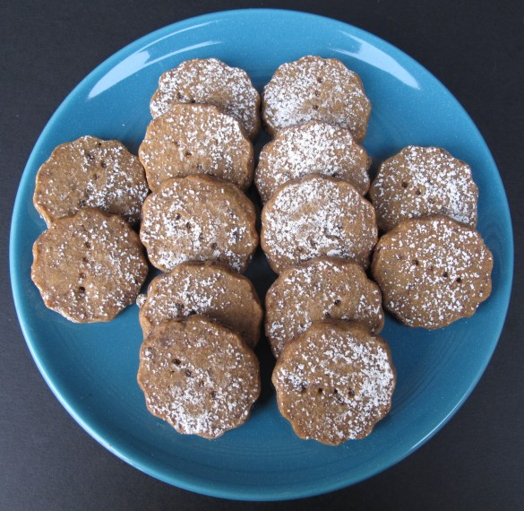

Espresso Shortbread Cookies

Enjoy these cookies by a toasty fireplace, consider leaving for Santa.
Kept in an airtight container at room temperature, shortbread will stay fresh for 3-6 weeks. The flavor improves over time. However, the key here is room temperature. This is NOT a hot weather cookie.
Ingredients
- 1 tablespoon instant espresso powder
- 1 tablespoon boiling water
- 1 cup butter unsalted, room temperature
- ⅔ cup confectioners’ sugar plus extra for dusting
- ½ teaspoon vanilla extract
- 2 cups all-purpose flour
- 1 toffee chocolate bar 3.5-4 ounces, finely chopped
- ¾ cup of mini chocolate chips can be used instead of the chopped chocolate bar
Instructions
- In a very small bowl, dissolve the espresso powder in the boiling water.
- In the bowl of an electric mixer, beat butter and confectioner’s sugar for 3 minutes at medium speed.
- Add the vanilla and espresso, beating until incorporated.
- Add the flour and mix at low speed until just combined.
- Fold in the chopped chocolate and toffee bits.
- Transfer the cookie dough into a gallon-size zipper-lock plastic bag, but do not close the bag.
- Roll the dough into rectangle the width of the bag and ¼” thick (approximately 9”x 11”x ¼”). While rolling, make sure no creases are formed in the dough from wrinkles in the plastic.
- Zip the bag closed removing as much air as possible. Refrigerate for 2 hours- 2 days.
- When ready to bake: Preheat oven to 325 degrees F. Line a baking sheet with a piece of parchment paper.
- Cut open the zip lock plastic bag and place the dough rectangle on a cutting board.
- Using a sharp knife or cookie cutter, cut the dough into desired shapes and transfer to the cookie sheet.
- Use a fork to poke holes in each cookie.
- Bake for 18-20 minutes.
- Dust with confectioner’s sugar while the cookies are still hot.
- Let the shortbread cool completely on a wire rack before storing.
- Store at room temperature in an airtight container for at least 3 weeks.